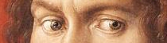
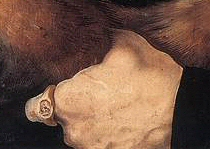

|
OSWALD KRELL (1499)
Triptychon bestehend aus drei Ölgemälden auf Holz, 50 x 39 cm (mittlere Tafel) und 50 x 16 cm (seitliche Tafeln)
Alte Pinakothek, München
∆
Kommentar
Das Portrait des Oswald Krell weist eine besonders starke
psychologische Ausstrahlung auf: das Bild ist ausdrucksstark und
beunruhigend, der ängstliche Blick unterstreicht die innere Spannung
der dargestellten Person.
∆
Detaillierte Analyse
Das Bildnis stammt aus der Sammlung der Prinzen Oettingen-Oettingen-Wallerstein, die es 1812 gekauft haben. Es wird angenommen, dass der wohlhabende Händler Oswald Krell, der von 1495 bis 1503 in Nürnberg gelebt hat, das Portrait seiner eigenen Person bei Dürer zu Ausstellungszwecken in Auftrag gegeben hat. Darauf wird aufgrund der beachtlichen Größe des Bildnisses, die von Dürer zwei Jahre zuvor bereits für seinen Vater verwendet wurde, und die Anordnung im Hochformat geschlossen. Diese Merkmale bilden auch den Unterschied dieses Bilds im Vergleich zu den Tucher-Portraits, die zu privaten Zweck angefertigt wurden.
Auf der mittleren Tafel zeigt der Hintergrund, wie bei den Tucher-Portraits, einen Vorhang und eine Landschaft, die hier allerdings nicht den gleichen Raum einnehmen. Der leuchtend rote Vorhang ist breit und nimmt den größten Teil der Fläche auf der rechten Seite ein; die Landschaft auf der linken Seite beschränkt sich auf einen kleinen Abschnitt eines Flusses, der sich hinter einem Wald mit hohen Bäumen verliert. Die ausdrucksstarke, durch intensive Farben hervorgehobene Figur befindet sich vor dem Vorhang.
Ein Pelzrock bedeckt lediglich die rechte Schulter und bildet einen Kontrast zu dem wertvollen schwarzen Oberkleid auf der linken Seite. Den ungeordneten Falten des Pelzrocks entsprechen die horizontalen und vertikalen Falten des schwarzen Oberkleids. Die Dreiviertel-Ansicht erlaubt dem Maler, die Qualität des Kleidungsstücks hervorzuheben. Diese ausführliche und detailgenaue Darstellung aller Einzelheiten bildet die Grundlage für die Gestaltung des Kopfes: eine kraftvoll männliche Haltung, ausgeprägte Nase und ein Mund mit vollen Lippen, gefurchte Augenbrauen, als ob eine plötzlich aufkommende Angst den Blick in eine unbestimmte Ferne links hinter ihm lenken würde:

Ziel dieser detaillierten Arbeit ist das Betonen der Ernsthaftigkeit, die von den hellbraunen gelockten Haaren kaum gemindert wird. Dem energischen Gesichtsausdruck entspricht die nervöse Geste der linken Hand, deren Finger sich in den Mantel graben:

Farbe, Form und Proportionen verstärken die Ausstrahlung der Person. Der Gesichtsausdruck ist das Ergebnis einer ausgiebigen psychologischen Analyse des Händlers, der ebenso alt war wie Dürer und später zum Bürgermeister seiner Geburtsstadt Lindau ernannt wurde.
Die beiden Seitentafeln des Triptychons stellen zwei Männer im Wald dar. Sie halten die Wappenschilder des Händlers und seiner Gattin Agathe von Esendorf. Ursprünglich ließen sich diese beiden Tafeln hinter der zentralen Tafel zusammenklappen. Der Rahmen wurde vor kurzem restauriert.
∆
Links
Website der Alten Pinakothek in München:
http://www.pinakothek.de/alte-pinakothek/
∆
|